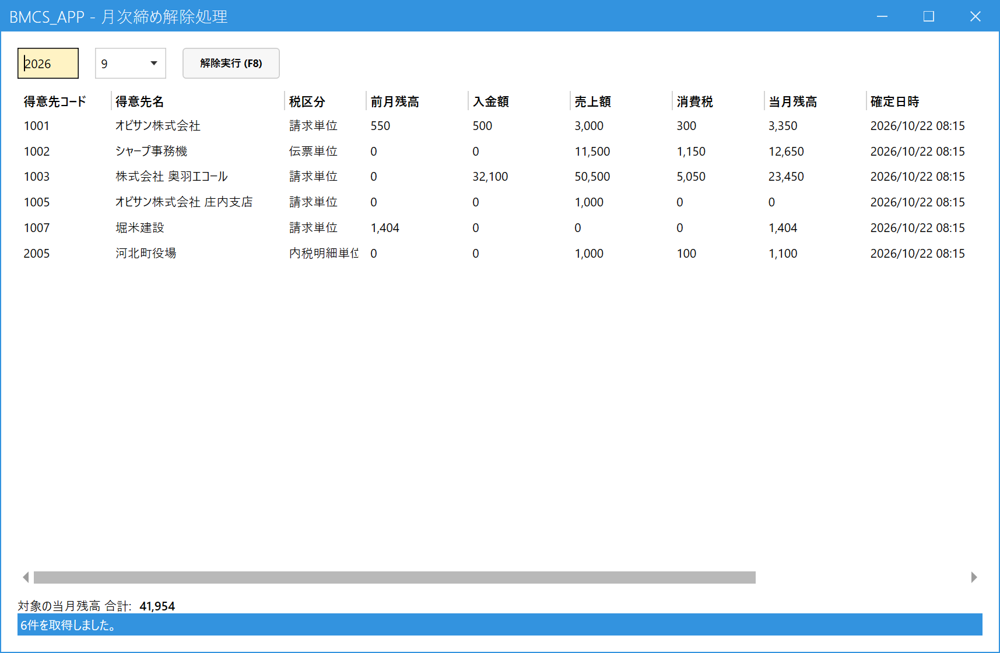

月次締めを解除する（管理者）
こんなときに使います
月次締めを間違えて確定したとき、または締めた月の売上・入金を直す必要が出たときに、締めを取り消します。
解除すると、その月の売上・入金をすぐに登録・訂正・取消できるようになります。
月次締めを間違えて確定したとき、または締めた月の売上・入金を直す必要が出たときに、締めを取り消します。
解除すると、その月の売上・入金をすぐに登録・訂正・取消できるようになります。
管理者専用の画面です。権限レベル9の社員にだけメニューに表示されます。
1.解除する月を選ぶ
メインメニューの「月次」の中の「月次締め解除処理」を開きます。左の欄に年を4桁で入れ、右の欄で月を選ぶと、その月に確定した全得意先の結果が出ます。

- 年（左の欄）：4桁で入力。
- 月（右の欄）：その年に締めた月から選びます。
- 解除の対象。その月の全得意先がまとめて対象です（得意先を選んで一部だけ解除はできません）。
- 解除実行 (F8)：確認メッセージで「はい」を選ぶと解除します。
2.解除できない場合
- その得意先に、より後の月がすでに確定しているときは解除できません。新しい月から順に解除します（例：9月分の前に10月分を解除）。
- 1件でも解除できない得意先があると、一覧の備考に理由が出て、解除実行が押せなくなります（全部が解除されません）。
3.解除したあとの流れ
- 解除実行 (F8) で解除する。
- 売上・入金を直す（すぐに登録・訂正・取消ができます）。
- 月次締め処理で、もう一度同じ月を締める（解除した結果が新しい値で上書きされます）。